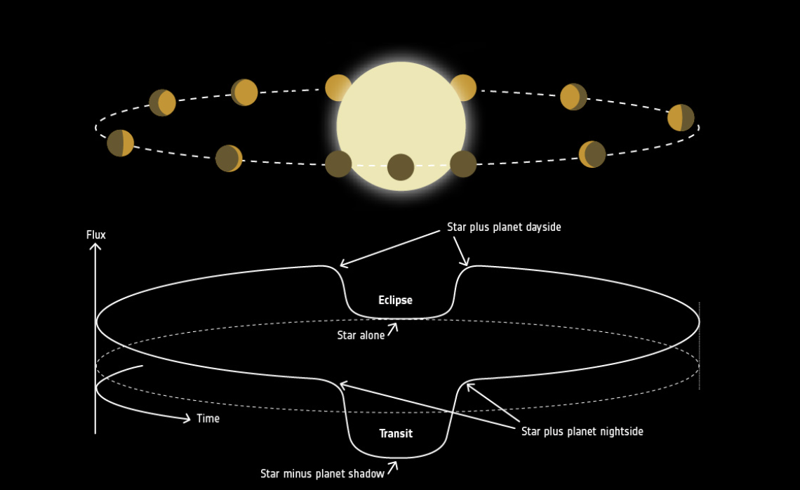

Observational astrophysicists use telescopes to gather light from space and make sense of massive amounts of data in order to make new discoveries.
We live in an era of astronomy where space-based telescopes are extremely sensitive to distant sources of light. Satellite surveys like Kepler, TESS, and JWST look at massive areas of the sky, collecting data all the time. This means scientists have an incredible amount of high quality data to use for making discoveries.
In this section of the workshop, participants will we delve into the intriguing world of distant planets beyond our solar system. We'll provide you with a practical understanding of exoplanet classification and detection. We in particular focus on the transit method, a key technique for measuring exoplanet properties. Using Python, you'll work with real data from the Kepler telescope, allowing you to analyze and deduce essential characteristics of these exoplanets. This workshop offers a hands-on approach to learning that enables you to perform analysis on real astronomical data.
